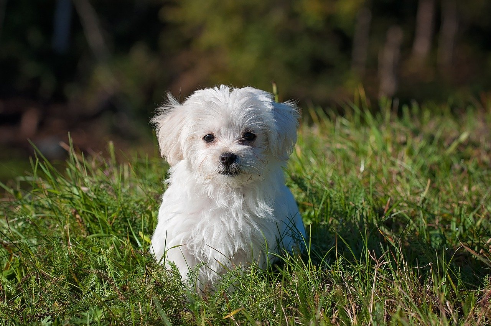
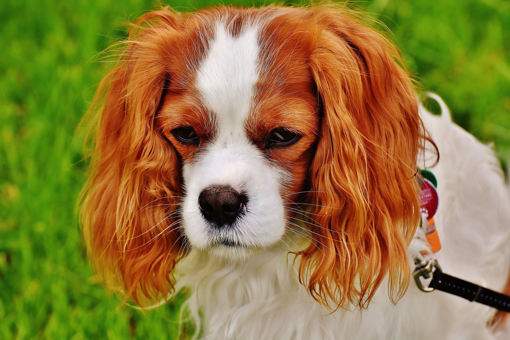

Iris is now in a foster home, and as you can see she is friendly with the resident dog. Iris is a very pretty girl with amazing eyes. Iris will need a lot of socialisation with as many adults, children, dogs and other animals as possible. She needs to become used to a wide range of events, environments and situations.

Publish Date 5/29/2020
Clicker training is a form of classical conditioning, which is when a previously neutral stimulus evokes a positive response and becomes associated with a desired outcome or reward. For example, your dog may be highly food motivated and gets excited whenever he sees or smells his food.

Publish Date 5/29/2020
One of the easiest ways to get started with clicker training is teaching your dog how to sit. At first, you will need to catch him while he is sitting down naturally. Click the clicker just once and then immediately give him his treat. This action is then repeated other times where you see that he is sitting.
Publish Date 5/29/2020
Clicker training is an excellent tool to help further bridge the connection between verbal commands and desired behaviors. By associating this neutral stimulus with a tasty treat, you will make learning easier for your pup without blurring the lines between positive reinforcement and a positive human-to-pet relationship. Remember that patience and repetition are critical to effective training, and always be consistent with your dog. You may be surprised to see how fast he can learn with clicker training!